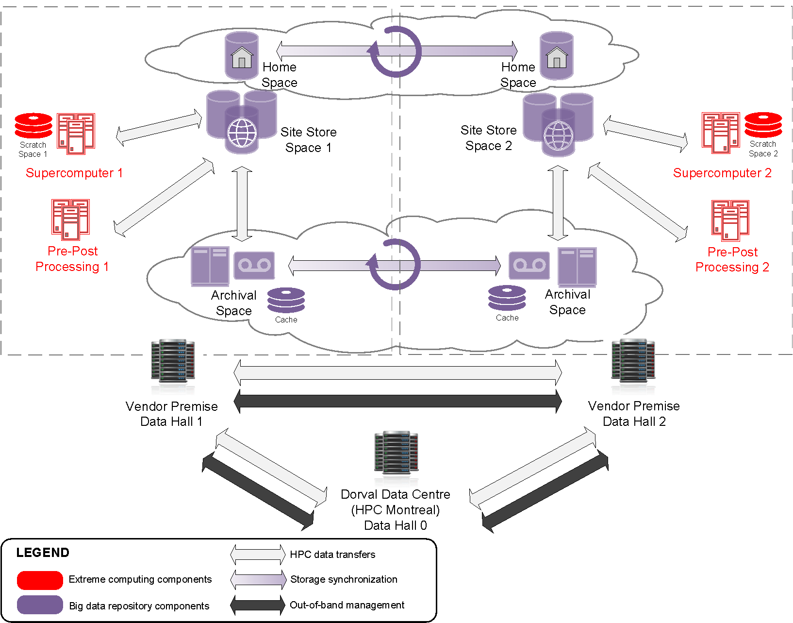
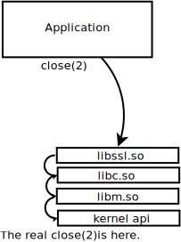
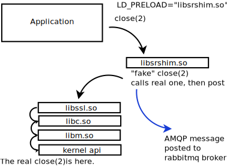
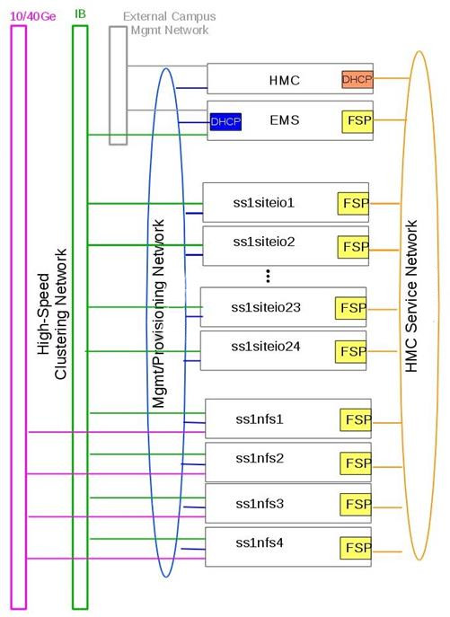

Case Study: HPC Mirroring¶
Continuously Mirror 27 Million File Tree Very Quickly¶
Contents
Summary¶
This project has taken longer than expected, over three years, as the problem space was explored with the help of a very patient client while the tool to design and implement the efficient solution was eventually settled on. The client asked for a solution to make files available on the backup cluster within five minutes of their creation on the primary one, and the first version of mirroring, deployed in 2017, achieves roughly a 20 minute delay. Version 2 was deployed in January 2020.
The client is actually more of a partner, who had very large test cases available and ended up shouldering the responsibility for all of us to understand whether the solution was working or not. While there are many specificities of this implementation, the resulting tool relies on no specific features beyond a normal Linux file system to achieve a 72:1 speedup compared to rsync on real-time continuous mirroring of 16 terabytes in 1.9 million files per day between two trees of 27 million files each. While this averages to 185 Mbytes/second sustained over a 24 hour period. It should be noted that the transfers are very peaky. On the same equipment at the same time, another 4 terabytes per day is being written to clusters on another network, so the aggregate read rate on the operational cluster is 20 Terabytes per day (231 mbytes/second) for this application, while the file systems are used for all the normal user applications as well.
While this project had to suffer through the development, with the lessons learned and the tools now available, it should be straightforward to apply this solution to other cases. The end result is that one adds a Shim Library to the users’ environment (transparent to user jobs), and then every time a file is written, an AMQP message with file metadata is posted. A pool of transfer daemons are standing by to transfer the files posted to a shared queue. The number of subscribers is programmable and scalable, and the techniques and topology to do the transfer are all easily controlled to optimize transfers for whatever criteria are deemed most important.
Problem Statement¶
In November 2016, Environment and Climate Change Canada’s (ECCC) Meteorological Service of Canada (MSC), as part of the High Performance Computing Replacement (HPCR) project asked for very large directory trees to be mirrored in real-time. Shared Services Canada (SSC) had primary responsibility for deployment of HPCR, with ECCC/MSC being the sole user community. It was known from the outset that these trees would be too large to deal with using ordinary tools. It was expected that it would take about 15 months to explore the issue and arrive at an effective operational deployment. It should be noted that SSC worked throughout this period in close partnership with ECCC, and that this deployment required the very active participation of sophisticated users to follow along with the twists and turns and different avenues explored and implemented.
The computing environment is Canada’s national weather centre, whose primary application is production numerical weather prediction, where models run 7/24 hours/day running different simulations (models of the atmosphere, and sometimes waterways and ocean, and the land under the atmosphere) either ingesting current observations aka assimilation, mapping them to a grid analysis, and then walking the grid forward in time prediction/prognostic. The forecasts follow a precise schedule throughout the 24hour cycle, feeding into one another, so delays ripple, and considerable effort is expended to avoid interruptions and maintain schedule.
HPCR Solution Overview¶
{kind=link}
In the diagram above, if operations are in Data Hall 1 (left of centre) and they fail, then the goal is to resume operations promptly from Data Hall 2 (on the right). For this to be realistic, production data must be available in the other hall, on the other site store, quickly. The mirroring problem is synchronizing a very large subset of data between site store 1 and site store 2. For monitoring purposes, at the same time, a smaller subset to must be mirrored to data hall 0.
Continuous Mirroring¶
There is a pair of clusters running these simulations, one normally mostly working on operations, and the other as a spare (running only research and development loads). When the primary fails, the intent is to run operations on the other supercomputer, using a spare disk to which all the live data has been mirrored. As there are (nearly) always runs in progress, the directories never stop being modified, and there is no maintenance period when one can catch up if one falls behind.
There are essentially three parts of the problem:
Detection: obtain the list of files which have been modified (recently).
Transfer: copy them to the other cluster (minimizing overhead.)
Performance: aspirational deadline to deliver a mirrored file: five minutes.
The actual trees to mirror were the following in the original contract phase (retrospectively called U0):
psilva@eccc1-ppp1:/home/sarr111/.config/sarra/poll$ grep directory *hall1*.conf
policy_hall1_admin.conf:directory /fs/site1/ops/eccc/cmod/prod/admin
policy_hall1_archive_dbase.conf:directory /fs/site1/ops/eccc/cmod/prod/archive.dbase
policy_hall1_cmop.conf:directory /fs/site1/ops/eccc/cmod/cmop/data/maestro/smco500
policy_hall1_daily_scores.conf:directory /fs/site1/ops/eccc/cmod/prod/daily_scores
policy_hall1_hubs.conf:directory /fs/site1/ops/eccc/cmod/prod/hubs
policy_hall1_products.conf:directory /fs/site1/ops/eccc/cmod/prod/products
policy_hall1_stats.conf:directory /fs/site1/ops/eccc/cmod/prod/stats
policy_hall1_version_control.conf:directory /fs/site1/ops/eccc/cmod/prod/version_control
policy_hall1_work_ops.conf:directory /fs/site1/ops/eccc/cmod/prod/work_ops
policy_hall1_work_par.conf:directory /fs/site1/ops/eccc/cmod/prod/work_par
psilva@eccc1-ppp1:/home/sarr111/.config/sarra/poll$
Initially, it was known that the number of files was large, but there was no knowledge of the actual amounts involved. Nor was that data even available until much later.
The most efficient way to copy these trees, as was stated at the outset, would be for all of the jobs writing files in the trees to explicitly announce the files to be copied. This would involve users modifying their jobs to include invocation of sr_cpost (a command which queues up file transfers for third parties to perform). However, the client set the additional constraint that modification of user jobs was not feasible, so the method used to obtain the list of files to copy had to be implicit (done by the system without active user involvement).
Reading the Tree Takes Too Long¶
One could just scan at a higher level in order to scan a single parent directory, but the half-dozen sub-trees trees were picked in order to have smaller ones which worked more quickly, regardless of the method being used to obtain lists of new files. What do we mean when we say these trees are too large? The largest of these trees is hubs ( /fs/site1/ops/eccc/cmod/prod/hubs ). Rsync was run on the hubs directory, as just walking the tree once, without any file copying going on. The walk of the tree, using rsync with checksumming disabled as an optimization, resulted in the log below:
psilva@eccc1-ppp1:~/test$ more tt_walk_hubs.log
nohup: ignoring input
rsync starting @ Sat Oct 7 14:56:52 GMT 2017
number of files examined is on the order of: rsync --dry-run --links -avi --size-only /fs/site1/ops/eccc/cmod/prod/hubs /fs/site2/ops/eccc/cmod/prod/hubs |& wc -l
27182247
rsync end @ Sat Oct 7 20:06:31 GMT 2017
psilva@eccc1-ppp1:~/test$
A single pass took over five hours, to examine 27 million files or examining about 1500 files per second. The maximum rate of running rsyncs on this tree is thus on the order of once every six hours (to allow some time for copying) for this tree. Note that any usual method of copying a directory tree requires traversing it, and that there is no reason to believe that any other tool such as find, dump, tar, tree, etc… would be significantly quicker than rsync. We need a faster method of knowing which files have been modified so that they can be copied.
Detection Methods: Inotify, Policy, SHIM¶
There is a Linux kernel feature known as INOTIFY, which can trigger an event when a file is modified. By setting an INOTIFY trigger on every directory in the tree, we can be notified when any file is modified in the tree. This was the initial approach taken. It turns out (in January 2017), that INOTIFY is indeed a Linux feature, in that the INOTIFY events only propagate across a single server. With a cluster file system like GPFS, one needs to run an INOTIFY monitor on every kernel where files are written. So rather than running a single daemon, we were faced with running several hundred daemons (one per physical node), each monitoring the same set of tens of millions of files. Since the deamons were running on many nodes, the memory use rose into the terabyte range.
An alternate approach: instead of running the modification detection at the Linux level, use the file system itself, which is database driven, to indicate which files had been modified. The HPC solution’s main storage system uses IBM’s General Parallel File System, or GPFS. Using the GPFS-policy method, a query is run against the file system database at as high a rhythm as can be sustained (around five to ten minutes per query) combined with sr_poll to announce the files modified (and thus eligible for copying). This is completely non-portable, but was expected to be much faster than file tree traversal.
Over the winter 2016/2017, both of these methods were implemented. The INOTIFY-based sr_watch was the fastest method (instantaneous), but the daemons were having stability and memory consumption problems, and they also took too long to startup (requires an initial tree traversal, which takes the same time as the rsync). While slower (taking longer to notice a file was modified), the GPFS policy had acceptable performance and was far more reliable than the parallel sr_watch method, and by the spring, with deployment expected for early July 2017, the GPFS policy approach was selected.
As the migration progressed, the file systems grew in that they had more files in the trees, and the GPFS-policy method progressively slowed. Already in July 2017, this was not an acceptable solution. At this point, the idea of intercepting jobs’ file i/o calls with a shim library was introduced. ECCC told SSC at the time, that having correct feeds, and having everything ready for transition was the priority, so the focus of efforts was in that direction until the migration was achieved in September. In spite of being a lower priority over the summer, a C implementation of the sending portion of the sarra library was implemented along with a prototype shim library to call it.
It should be noted that the GPFS-policy runs have been operationally deployed since 2017. This has turned out to be version 1 of the mirroring solution, and has achieved a mirroring to secondary clusters with approximately 20 minutes of delay in getting the data to the second system. Three years in, there is now an upgrade of the supercomputer clusters (called U1) in progress with two new additional clusters online, The client is now using normal Sarracenia methods to mirror from the old backup cluster to the new ones, with only a few seconds delay beyond what it takes to get to the backup cluster.
It should also be noted that use of GPFS policy queries have imposed a significant and continuous load on the GPFS clusters, and are a constant worry to the GPFS administrators. They would very much like to get rid of it. Performance has stabilized in the past year, but it does appear to slow as the size of the file tree grows. Many optimisations were implemented to obtain adequate performance.
Shim Library¶
The method settled on for notification is a shim library When a running application makes calls to API entry points that are provided by libraries or the kernel, there is a search process (resolved at application load time) that finds the first entry in the path that has the proper signature. For example, in issuing a file close(2) call, the operating system will arrange for the correct routine in the correct library to be called.
A call to the close routine, indicates that a program has finished writing the file in question, and so usually indicates the earliest time it is useful to advertise a file for transfer. We created a shim library, which has entry points that impersonate the ones being called by the application, in order to have file availability notifications posted by the application itself, without any application modification.
Usage of the shim library is detailed in sr_post(1)
Copying Files¶
It needs to be noted that while all of this work was progressing on the ‘obtain the list of files to be copied’ part of the problem, we were also working on the ‘copy the files to the other side’ part of the problem. Over the summer, results of performance tests and other considerations militated frequent changes in tactics. The site stores are clusters in their own right. They have protocol nodes for serving traffic outside of the GPFS cluster. There are siteio nodes with infiniband connections and actual disks. The protocol nodes (called nfs or proto) are participants in the GPFS cluster dedicated to i/o operations, used to offload i/o from the main compute clusters (PPP and Supercomputer), which have comparable connections to the site store as the protocol nodes.
There are multiple networks (40GigE, Infiniband, as well as management networks) and the one to use needs to be chosen as well. Then there are the methods of communication (ssh over tcp/ip? bbcp over tcp/ip? GPFS over tcpip? ipoib? native-ib?).
Many different sources and destinations (ppp, nfs, and protocol nodes), as well many different methods (rcp, scp, bbcp, sscp, cp, dd) and were all trialled to different degrees at different times. At this point several strengths of sarracenia were evident:
The separation of publishing from subscribing means that one can subscribe on the source node and push to the destination, or on the destination and pull from the source. It is easy to adapt for either approach (ended up on destination protocol nodes, pulling from the source).
The separation of copying from the computational jobs means that the models run times are unaffected, as the i/o jobs are completely separate.
The ability to scale the number of workers to the performance needed (eventually settled on 40 workers performing copies in parallel).
The availability of plugins download_cp, download_rcp, download_dd, allow many different copy programs (and hence protocols) to be easily applied to the transfer problem.
Many different criteria were considered (such as: load on nfs/protocol nodes, other nodes, transfer speed, load on PPP nodes). The final configuration selected of using cp (via the download_cp plugin) initiated from the receiving site store’s protocol nodes. So the reads would occur via GPFS over IPoIB, and the writes would be done over native GPFS over IB. This was not the fastest transfer method tested (bbcp was faster) but it was selected because it spread the load out to the siteio nodes, resulted in more stable NFS and protocol nodes and removed tcp/ip setup/teardown overhead. The ‘copy the files to the other side’ part of the problem was stable by the end of the summer of 2017, and the impact on system stability is minimized.
Shim Library Necessary¶
Unfortunately, the mirroring between sites was running with about a 10-minute lag on the source files system (about 30 times faster than a naive rsync approach), and was only working in principle, with many files missing in practice, it wasn’t usable for its intended purpose. The operational commissioning of the HPCR solution as a whole (with mirroring deferred) occurred in September of 2017, and work on mirroring essentially stopped until October (because of activities related to the commissioning work).
We continued to work on two approaches, the libsrshim, and the GPFS-policy. The queries run by the GPFS-policy had to to be tuned, eventually an overlap of 75 seconds (where a succeeding query would ask for file modifications up to a point 75 seconds before the last one ended) because there were issues with files being missing in the copies. Even with this level of overlap, there were still missing files. At this point, in late November, early December, the libsrshim was working well enough to be so encouraging that folks lost interest in the GPFS policy. In contrast to an average of about a 10-minute delay starting a file copy with GPFS-policy queries, the libsrshim approach has the copy queued as soon as the file is closed on the source file system.
It should be noted that when the work began, the python implementation of Sarracenia was a data distribution tool, with no support for mirroring. As the year progressed features (symbolic link support, file attribute transportation, file removal support) were added to the initial package. The idea of periodic processing (called heartbeats) was added, first to detect failures of clients (by seeing idle logs) but later to initiate garbage collection for the duplicates cache, memory use policing, and complex error recovery. The use case precipitated many improvements in the application, including a second implementation in C for environments where a Python3 environment was difficult to establish, or where efficiency was paramount (the libsrshim case).
Does it Work?¶
In December 2017, the software for the libsrshim approach looked ready, it was deployed in some small parallel (non-operational runs). Testing in parallel runs started in January 2018. There were many edge cases, and testing continued for two years, until finally being ready for deployment in December 2019. I
FIXME: include links to plugins
FIXME: Another approach being considered is to compare file system snapshots.
As the shim library was used in wider and wider contexts to get it closer to deployment, a significant number of edge cases were encountered:
use with non-login shells (especially scp) ( https://github.com/MetPX/sarrac/issues/66 )
Buggy Fortran applications improperly calling close ( https://github.com/MetPX/sarrac/issues/12 )
tcl/tk treating any output to stderr as an failure ( https://github.com/MetPX/sarracenia/issues/69 )
high performance shell scripts ( https://github.com/MetPX/sarrac/issues/15 )
code that doesn’t close every files ( https://github.com/MetPX/sarrac/issues/11 )
code that does not close even one file ( https://github.com/MetPX/sarrac/issues/68 )
there are paths in use longer than 255 characters ( https://github.com/MetPX/sarrac/issues/39 )
clashes in symbols, causing sed to crash ( https://github.com/MetPX/sarrac/issues/80 )
Over the ensuing two years, these edge cases have been dealt with and deployment finally happenned with the transition to U1 in January 2020. It is expected that the delay in files appearing on the second file system will be on the order of five minutes after they are written on the source tree, or 72 times faster than rsync (see next section for performance info), but we don´t have concrete metrics yet.
The question naturally arose, if the directory tree cannot be traversed, how do we know that the source and destination trees are the same? A program to pick random files on the source tree is used to feed an sr_poll, which then adjusts the path to compare it to the same file on the destination. Over a large number of samples, we get a quantification of how accurate the copy is. The plugin for this comparison is still in development.
Is it Fast?¶
The GPFS-policy runs are the still the method in use operationally as this is written (2018/01). The performance numbers given in the summary are taken from the logs of one day of GPFS-policy runs.
Hall1 to Hall2: bytes/days: 18615163646615 = 16T, nb file/day: 1901463
Hall2 to CMC: bytes/days: 4421909953006 = 4T, nb file/day: 475085
All indications are that the shim library copies more data more quickly than the policy based runs, but so far (2018/01) only subsets of the main tree have been tested. On one tree of 142000 files, the GPFS-policy run had a mean transfer time of 1355 seconds (about 23 minutes), where the shim library approach had a mean transfer time of 239 seconds (less than five minutes) or a speedup for libshim vs. GPFS-policy of about 4:1. On a second tree where the shim library transferred 144 thousand files in a day, the mean transfer time was 264 seconds, where the same tree with the GPFS-policy approach took 1175 (basically 20 minutes). The stats are accumulated for particular hours, and at low traffic times, the average transfer time with the shim library was 0.5 seconds vs. 166 seconds with the policy. One could claim a 300:1 speedup, but this is just inherent to the fact that GPFS-policy method must be limited to a certain polling interval (five minutes) to limit impact on the file system, and that provides a lower bound on transfer latency.
On comparable trees, the number of files being copied with the shim library is always higher than with the GPFS-policy. While correctness is still being evaluated, the shim method is apparently working better than the policy runs. If we return to the original rsync performance of 6 hours for the tree, then the ratio we expect to deliver on is 6 hours vs. 5 minutes … or 72:1 speedup.
The above is based on the following client report:
Jan 4th
Preload:
dracette@eccc1-ppp1:~$ ./mirror.audit_filtered -c ~opruns/.config/sarra/subscribe/ldpreload.conf -t daily -d 2018-01-04
Mean transfer time: 238.622s
Max transfer time: 1176.83s for file: /space/hall2/sitestore/eccc/cmod/cmoi/opruns/ldpreload_test/hubs/suites/par/wcps_20170501/wh/banco/cutoff/2018010406_078_prog_gls_rel.tb0
Min transfer time: 0.0244577s for file: /space/hall2/sitestore/eccc/cmod/cmoi/opruns/ldpreload_test/hubs/suites/par/capa25km_20170619/gridpt/qperad/radar/radprm/backup/ATX_radprm
Total files: 142426
Files over 300s: 44506
Files over 600s: 14666
Policy:
dracette@eccc1-ppp1:~$ ./mirror.audit_filtered -c ~opruns/.config/sarra/subscribe/mirror-ss1-from-hall2.conf -t daily -d 2018-01-04
Mean transfer time: 1355.42s
Max transfer time: 2943.53s for file: /space/hall2/sitestore/eccc/cmod/prod/hubs/suites/par/capa25km_20170619/gridpt/qperad/surface/201801041500_tt.obs
Min transfer time: 1.93106s for file: /space/hall2/sitestore/eccc/cmod/prod/archive.dbase/dayfiles/par/2018010416_opruns_capa25km_rdpa_final
Total files: 98296
Files over 300s: 97504
Files over 600s: 96136
Jan 3rd
Preload:
dracette@eccc1-ppp1:~$ ./mirror.audit_filtered -c ~opruns/.config/sarra/subscribe/ldpreload.conf -t daily -d 2018-01-03
Mean transfer time: 264.377s
Max transfer time: 1498.73s for file: /space/hall2/sitestore/eccc/cmod/cmoi/opruns/ldpreload_test/hubs/suites/par/capa25km_20170619/gridpt/capa/bassin/6h/prelim/05/2018010312_05ME005_1.dbf
Min transfer time: 0.0178287s for file: /space/hall2/sitestore/eccc/cmod/cmoi/opruns/ldpreload_test/hubs/suites/par/capa25km_20170619/gridpt/qperad/radar/statqpe/backup/XSS_0p1_statqpe
Total files: 144419
Files over 300s: 60977
Files over 600s: 14185
Policy:
dracette@eccc1-ppp1:~$ ./mirror.audit_filtered -c ~opruns/.config/sarra/subscribe/mirror-ss1-from-hall2.conf -t daily -d 2018-01-03
Mean transfer time: 1175.33s
Max transfer time: 2954.57s for file: /space/hall2/sitestore/eccc/cmod/prod/hubs/suites/par/capa25km_20170619/gridpt/qperad/surface/201801032200_tt.obs
Min transfer time: -0.359947s for file: /space/hall2/sitestore/eccc/cmod/prod/hubs/suites/par/capa25km_20170619/gridpt/qperad/radar/pa/1h/XTI/201801031300~~PA,PA_PRECIPET,EE,1H:URP:XTI:RADAR:META:COR1
Total files: 106892
Files over 300s: 106176
Files over 600s: 104755
To keep in mind:
We have 12 instances for the preload while we’re running 40 for the policy.
* I filtered out the set of files that skewed the results heavily.
* The preload audit in hourly slices shows that it’s heavily instance-bound.
* If we were to boost it up it should give out much better results in high count situations.
Here’s Jan 4th again but by hourly slice:
dracette@eccc1-ppp1:~$ ./mirror.audit_filtered -c ~opruns/.config/sarra/subscribe/ldpreload.conf -t hourly -d 2018-01-04
00 GMT
Mean transfer time: 0.505439s
Max transfer time: 5.54261s for file: /space/hall2/sitestore/eccc/cmod/cmoi/opruns/ldpreload_test/hubs/suites/par/capa25km_20170619/gridpt/qperad/radar/pa/6h/XME/201801040000~~PA,PA_PRECIPET,EE,6H:URP:XME:RADAR:META:NRML
Min transfer time: 0.0328007s for file: /space/hall2/sitestore/eccc/cmod/cmoi/opruns/ldpreload_test/hubs/suites/par/capa25km_20170619/gridpt/qperad/radar/statqpe/backup/IWX_0p5_statqpe
Total files: 847
Files over 300s: 0
Files over 600s: 0
01 GMT
Mean transfer time: 166.883s
Max transfer time: 1168.64s for file: /space/hall2/sitestore/eccc/cmod/cmoi/opruns/ldpreload_test/hubs/suites/par/wcps_20170501/wh/banco/cutoff/2018010318_078_prog_gls_rel.tb0
Min transfer time: 0.025425s for file: /space/hall2/sitestore/eccc/cmod/cmoi/opruns/ldpreload_test/hubs/suites/par/capa25km_20170619/gridpt/qperad/biais/6h/XPG/201801031800_XPG_statomr
Total files: 24102
Files over 300s: 3064
Files over 600s: 1
02 GMT
Mean transfer time: 0.531483s
Max transfer time: 4.73308s for file: /space/hall2/sitestore/eccc/cmod/cmoi/opruns/ldpreload_test/archive.dbase/dayfiles/par/2018010401_opruns_capa25km_rdpa_preli
Min transfer time: 0.0390887s for file: /space/hall2/sitestore/eccc/cmod/cmoi/opruns/ldpreload_test/hubs/suites/par/capa25km_20170619/gridpt/qperad/radar/radprm/XMB/201801031900_XMB_radprm
Total files: 774
Files over 300s: 0
Files over 600s: 0
03 GMT
Mean transfer time: 0.669443s
Max transfer time: 131.666s for file: /space/hall2/sitestore/eccc/cmod/cmoi/opruns/ldpreload_test/hubs/suites/par/capa25km_20170619/gridpt/qperad/radar/pa/1h/WKR/201801032000~~PA,PA_PRECIPET,EE,1H:URP:WKR:RADAR:META:COR2
Min transfer time: 0.0244577s for file: /space/hall2/sitestore/eccc/cmod/cmoi/opruns/ldpreload_test/hubs/suites/par/capa25km_20170619/gridpt/qperad/radar/radprm/backup/ATX_radprm
Total files: 590
Files over 300s: 0
Files over 600s: 0
04 GMT
Mean transfer time: 59.0324s
Max transfer time: 236.029s for file: /space/hall2/sitestore/eccc/cmod/cmoi/opruns/ldpreload_test/hubs/suites/par/wcps_20170501/wf/depot/2018010400/nemo/LISTINGS/ocean.output.00016.672
Min transfer time: 0.033812s for file: /space/hall2/sitestore/eccc/cmod/cmoi/opruns/ldpreload_test/hubs/suites/par/resps_20171107/forecast/products_dbase/images/2018010400_resps_ens-point-ETAs_239h-boxplot-NS_Pictou-001_240.png
Total files: 2297
Files over 300s: 0
Files over 600s: 0
05 GMT
Mean transfer time: 6.60841s
Max transfer time: 28.6136s for file: /space/hall2/sitestore/eccc/cmod/cmoi/opruns/ldpreload_test/hubs/suites/par/rewps_20171018/forecast/products_dbase/images_prog/2018010400_rewps_ens-point-Hs_Tp_072h-45012-000_072.png
Min transfer time: 0.0278831s for file: /space/hall2/sitestore/eccc/cmod/cmoi/opruns/ldpreload_test/hubs/suites/par/capa25km_20170619/gridpt/qperad/radar/statqpe/XSM/201801032200_XSM_0p2_statqpe
Total files: 3540
Files over 300s: 0
Files over 600s: 0
06 GMT
Mean transfer time: 1.90411s
Max transfer time: 18.5288s for file: /space/hall2/sitestore/eccc/cmod/cmoi/opruns/ldpreload_test/hubs/suites/par/capa25km_20170619/gridpt/qperad/radar/statqpe/backup/ARX_0p5_statqpe
Min transfer time: 0.0346384s for file: /space/hall2/sitestore/eccc/cmod/cmoi/opruns/ldpreload_test/hubs/suites/par/capa25km_20170619/gridpt/qperad/biais/6h/WWW/201801040600_WWW_statomr
Total files: 757
Files over 300s: 0
Files over 600s: 0
07 GMT
Mean transfer time: 262.338s
Max transfer time: 558.845s for file: /space/hall2/sitestore/eccc/cmod/cmoi/opruns/ldpreload_test/hubs/suites/par/capa25km_20170619/gridpt/capa/bassin/6h/final/11/2018010400_11AA028_1.shp
Min transfer time: 0.028173s for file: /space/hall2/sitestore/eccc/cmod/cmoi/opruns/ldpreload_test/hubs/suites/par/capa25km_20170619/gridpt/qperad/biais/6h/DLH/201801040000_DLH_statomr
Total files: 23849
Files over 300s: 11596
Files over 600s: 0
Overheads¶
What is the effect on user jobs of putting the shim library in service? When used in large models with good i/o patterns necessary for high performance, the overhead added by the shim library can be negligeable. However there is additional overhead introduced whenever a process is spawned, closes a file, and when it terminates. Shell scripts, which function by spawning and reaping processes continuously, see maximum impact from the shim library. This is explored in Issue https://github.com/MetPX/sarrac/issues/15 :
Issue 15 describes the worst case shell script that re-writes a file, one line at a time, spawning and reaping a process every time. In that case, we see as much as an 18 fold penalty in shell script performance. However re-writing the shell script in python can yield a 20 fold improvement in performance, with almost no overhead from the shim library (360 times faster than the equivalent shell script with the shim library active.)
So shell scripts that were slow before, may be much slower with the shim library, but the accelleration available by re-formulating to more efficient methods can have much larger benefits as well.
Contributions¶
Dominic Racette - ECCC CMC Operations Implementation
Client lead on the mirroring project. A lot of auditing and running of tests. Integration/deployment of copying plugins. A great deal of testing and extraction of log reports. This was a project relied extensive client participation to provide a hugely varied test suite, and Dominic was responsible for the lion´s share of that work.
Anthony Chartier - ECCC CMC Development
Client lead on the Acquisition de Données Environnementales the data acquisition system used by Canadian numerical weather prediction suites.
Doug Bender - ECCC CMC Operations Implementation
Another client analyst participating in the project. Awareness, engagement, etc…
Daluma Sen - SSC DCSB Supercomputing HPC Optimization
Building C libraries in HPC environment, contributing the random file picker, general consulting.
Alain St-Denis - Manager, SSC DCSB Supercomputing HPC Optimization
Inspiration, consultation, wise man. Initially proposed shim library. Helped with debugging.
Daniel Pelissier - SSC DCSB Supercomputing HPC Integration / then replacing Alain.
Inspiration/consultation on GPFS-policy work, and use of storage systems.
Tarak Patel - SSC DCSB Supercomputing HPC Integration.
Installation of Sarracenia on protocol nodes and other specific locations. Development of GPFS-policy scripts, called by Jun Hu’s plugins.
Jun Hu - SSC DCSB Supercomputing Data Interchange
Deployment lead for SSC, developed GPFS-policy Sarracenia integration plugins, implemented them within sr_poll, worked with CMOI on deployments. Shouldered most of SSC’s deployment load. Deployment of inotify/sr_watch implementation.
Noureddine Habili - SSC DCSB Supercomputing Data Interchange
Debian packaging for C-implementation. Some deployment work as well.
Peter Silva - Manager, SSC DCSB Supercomputing Data Interchange
Project lead, wrote C implementation including shim library, hacked on the Python also from time to time. Initial versions of most plugins (in Sarra.)
Michel Grenier - SSC DCSB Supercomputing Data Interchange
Python Sarracenia development lead. Some C fixes as well.
Deric Sullivan - Manager, SSC DCSB Supercomputing HPC Solutions
Consultation/work on deployments with inotify solution.
Walter Richards - SSC DCSB Supercomputing HPC Solutions
Consultation/work on deployments with inotify solution.
Jamal Ayach - SSC DCSB Supercomputing HPC Solutions
Consultation/work on deployments with inotify solution, also native package installation on pre and post processors.
Michael Saraga - SSC DCSB .Data Interchange
work on the C implementation in 2019, prepared native packaging and packages for Suse and Redhat distributions.
Binh Ngo - SSC DCSB Supercomputing HPC Solutions
native package installation on cray backends.
FIXME: who else should be here: ?
There was also support and oversight from management in both ECCC and SSC throughout the project.